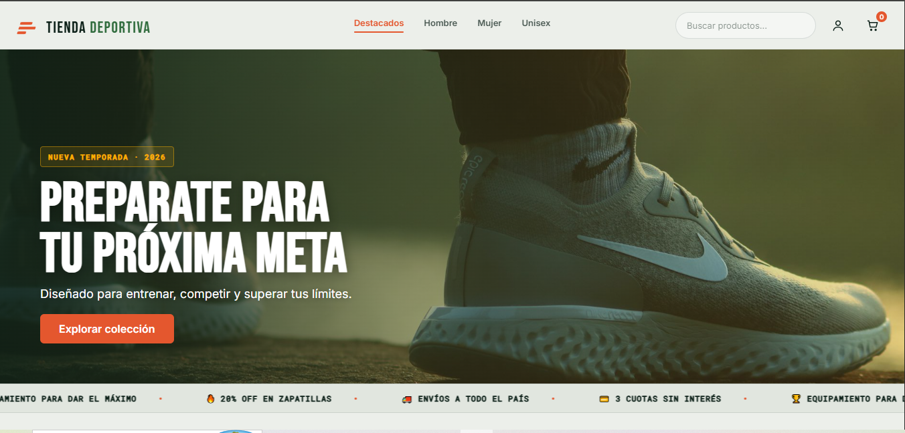

Entender el problema
Aclaro qué hay que resolver, para quién es y qué resultado se espera, antes de empezar a maquetar.
Desarrollo sitios modernos, funcionales y responsive, pensados para resolver necesidades reales de negocio.
Soy desarrollador web enfocado en Frontend, especializado en crear interfaces modernas, funcionales y responsive.
Me interesa transformar necesidades concretas de un negocio en experiencias digitales simples, claras y efectivas.
Actualmente estoy ampliando mi perfil con formación en Análisis de Negocios, buscando combinar desarrollo tecnológico con una mejor comprensión de los problemas que una solución digital debe resolver.
Interfaces modernas y adaptables.
Navegación clara y decisiones centradas en el usuario.
Desarrollo orientado a objetivos reales.
Un recorrido corto: primero el problema, después la interfaz, después el código.
Aclaro qué hay que resolver, para quién es y qué resultado se espera, antes de empezar a maquetar.
Defino estructura, jerarquía visual y un recorrido simple en desktop y en mobile.
Desarrollo con HTML, CSS y JavaScript, pruebo en distintos tamaños de pantalla y dejo el código listo para conectar con Firebase o un backend.

Plataforma de comercio electrónico con catálogo dinámico, carrito interactivo, almacenamiento en LocalStorage, filtros en tiempo real y arquitectura lista para conectar con Firestore.

Plataforma de dashboards analíticos orientados a la gestión de datos e integración de APIs.
¿Tenés una propuesta laboral o un proyecto en mente? Ponete en contacto conmigo.